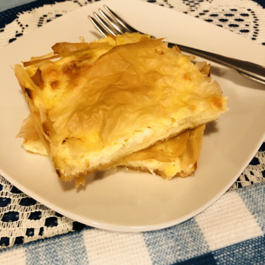

Home
How to make Banitsa!

Description
Banitsa, the Bulgarian feta cheese pastry, is ubiquitous in Bulgarian life. After living in Sofia for nearly a year, banitsa is the first food I missed upon returning home. This is the recipe I wanted to share with the world and the reason I started thinking about writing this blog. In Bulgaria there was a small kiosk outside my apartment building that sold warm banitsa. So I had a ready supply whenever I wanted a taste-which was often. However, I had to get there early because they would sell out daily. I would also find banitsa in other kiosks throughout the city, or sold from vendor windows along the sidewalks, or in cafes, or in people's homes…as I said, it was ubiquitous.
Ingredients
- 1 cup Bulgarian yogurt
- 4 eggs
- 16 oz Bulgarian feta cheese
- 16 oz ricotta or cottage cheese
- 1/2 cup butter
- ground black pepper
- salt
- 16-20 sheets phyllo dough
Steps
(I couldn't find any images for Banitsa since none of the websites had them included in their steps...)
- Mix yogurt and eggs in a medium bowl, beating until combined.
- Crumble feta into egg mixture. If using additional cheese, add it and stir to combine.
- Season with a little ground pepper and salt (unless your feta is quite salty).
- Grease a half sheet pan or jellyroll pan with melted butter or nonstick spray. Set oven to 375°F.
- Put one layer of phyllo pastry onto pan and brush with melted butter. Add another phyllo sheet and repeat. Do this until you have four buttered layers of phyllo in the pan.
- Pour one third of the egg-cheese mixture onto the top phyllo sheet and carefully spread as evenly as possible over the surface.
- Place four more sheets of phyllo dough on top of the cheese layer, buttering each sheet.
- Pour another third of the egg-cheese mixture onto the top phyllo sheet and carefully spread as evenly as possible over the surface.
- Place four more sheets of phyllo dough on top of the cheese layer, buttering each sheet.
- Pour the last third of the egg-cheese mixture onto the top phyllo sheet and carefully spread as evenly as possible over the surface.
- Top with remaining phyllo sheets, buttering them as before. Fold any stray edges over onto the banitsa in the pan. Pour any remaining butter onto the top and coat the surface well.
- Place banitsa in center of heated oven and bake for about 30 minutes or until golden brown and crispy on top.
- Remove from oven and put down a layer of paper towels on top of the banitsa. Then cover with a kitchen towel and let it sit for 10 minutes.
- Slice and serve warm. Reheat in the oven or microwave to enjoy any time as a snack.